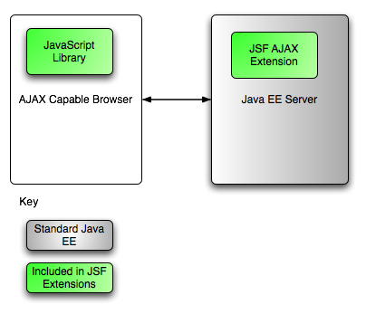

In late September 2005, JSF Expert Group member Jacob Hookom wrote a blog about an idea he had regarding how to allow AJAX to exploit the existing capabilities of JSF. He called the idea "avatar" to describe a server side entity that represents the client. JSF co-spec-lead Ed Burns helped refine the idea, and several demonstrations were presented at JavaOne 2006.
Essentially, the idea with avatar is to expose the JSF Request Processing lifecycle to components delivered to the browser via JSF, but enable them to easily use AJAX to interact with the view once the page is displayed in the browser. This is accomplished by exposing a simple JavaScript library to the user and JSF component author, along with a server side extension to the JSF lifecycle, as shown in the following diagram.
To understand the available features of JSF Extensions Avatar, let's take a look at several use cases for AJAX enabling a JSF application.
This is enabled by giving the page author a small set of
JavaScript objects they can use in the on* javascript
attributes. For example:
<h:commandButton value="Add Item" action="#{orderEntry.addProduct}"
onclick="DynaFaces.fireAjaxTransaction(this); return false;"/>
Will cause an AJAX request to be sent to the server. Any values in the current form will be submitted, the entire request processing lifecycle will be run, and the application logic will decide which parts of the view need to be refreshed. The server will send down only those parts, where the JavaScript library will dynamically replace the content appropriately.
In addition to DynaFaces.fireAjaxTransaction, the
JavaScript library includes a subclass,
DynaFaces.installDeferredAjaxTransaction, that turns
any markup element in the page, including JSF components, into an
AJAX capable widget. For example:
<h:panelGroup id="subview2">
<d:scroller id="scroller" navFacetOrientation="NORTH" for="table"
actionListener="#{ResultSetBean.processScrollEvent}">
<f:facet name="next">
<h:panelGroup>
<h:outputText value="Next"/>
<h:graphicImage url="/images/arrow-right.gif" />
</h:panelGroup>
</f:facet>
<f:facet name="previous">
<h:panelGroup>
<h:outputText value="Previous"/>
<h:graphicImage url="/images/arrow-left.gif" />
</h:panelGroup>
</f:facet>
<f:facet name="current">
<h:panelGroup>
<h:graphicImage url="/images/duke.gif" />
</h:panelGroup>
</f:facet>
</d:scroller>
<script type='text/javascript'>
document.forms[0].submit = function() {};
var a = $('form:subview2').getElementsByTagName('a');
$A(a).each(function(e) {
DynaFaces.installDeferredAjaxTransaction(e, 'mousedown', { render: 'form:table,form:subview2' });
});
</script>
</h:panelGroup>
The previous example AJAXifies the Scroller component from the Sun
Blueprints Simple UI Components by calling
DynaFaces.installDeferredAjaxTransaction on the
mousedown of each hyperlink within the scroller component. The
arguments to the
DynaFaces.installDeferredAjaxTransaction are:
form:table and form:subview2.
Complete documentation on the supported options for
DynaFaces.fireAjaxTransaction and
DynaFaces.installDeferredAjaxTransaction can be
found in reference
document.